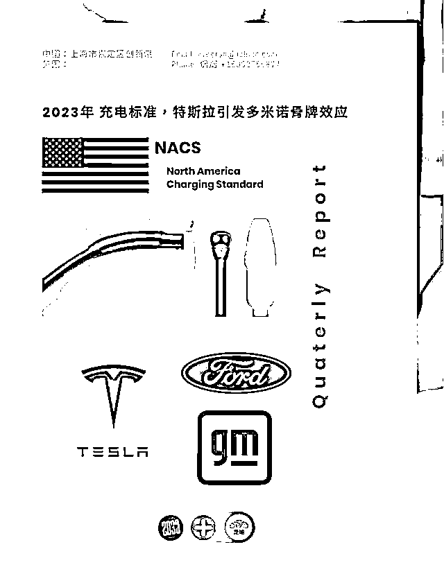
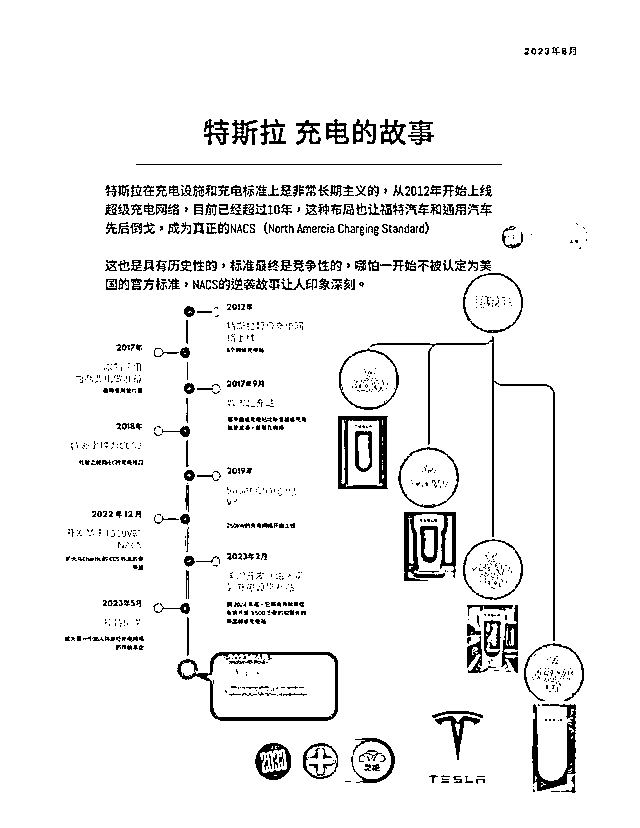
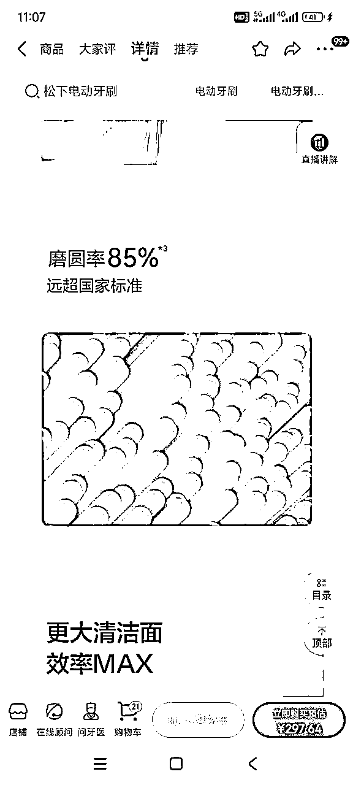
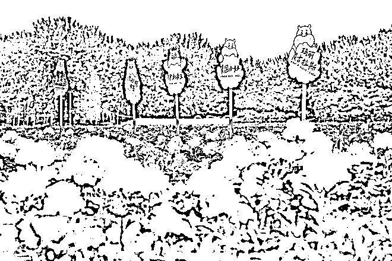
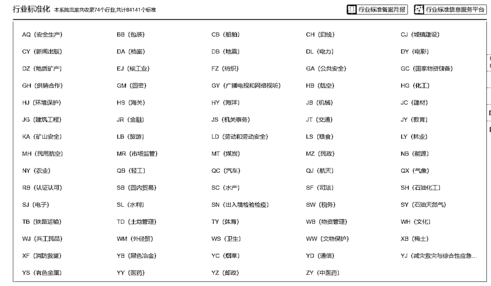

来源：https://vy7zcdp134.feishu.cn/docx/GpxMdblYAoPONMxED3Xc4trinNn
大家好，我叫阿黎，我主业涉及行业的标准化工作，是广西标准化协会2020年建库的首批入库专家，主持和参加过11项标准制订并发布实施，对标准化有一些了解。
我2024年参加了生财《10X is easier than 2X》共读，在11月有幸参加了亦仁《10X比2X更容易》的夜话，对10X有了更多的感触，想结合自己在标准化领域的一些见解，给大家做个分享。
眼下又是给新一年做规划的时候，
对生财圈友来说，在新的一年，获得10X的抓手有很多，我觉得标准化是其中一个。
说实话，企业通过标准化实现增长，是一个事无巨细的话题。
这篇文章多次推翻重写，最后定位在“给大家提供一个应用标准化，获得10X的线索”，主要介绍：
什么是标准化，标准化有什么用，以及一些应用标准化实现增长的案例。
另外，文章虽然主要针对企业，但实际上针对个人业务发展来说，也是成立的。
之前和条形马、郑发山老师探索过标准化的话题，获得很多启发和指导，也是起心动念做这篇分享的源头，在此表示感谢！
文章比较长，附上简要介绍，大家可以跳读：
第1章主要给大家建立一个概念，标准化是什么；
第2章介绍2家通过标准化获得10X增长的企业案例，这2家属于同一行业，大家可以体会在不同时代背景下，他们如何通过标准化破局，实现增长；
第3章分享标准化对企业实现增长的8个帮助，
第4章介绍项目在初创、行业腰部、头部阶段，如何应用标准化实现增长；
第5章介绍如何查询和获取标准化文件，以及标准和专利的关系。
标准化并不遥远，也不高大上，它就在我们日常生活中，默默地发挥作用。
所以文章中选用了一些与大家生活及赚钱相关的标准化的案例，尽可能避开那些深奥的行业案例，这些案例是：
在说标准化是什么之前，我想问一下：你家豆腐脑，吃甜的还是咸的？
这个问题，曾经在微博上，引发了著名的“南北之战”。
2011年6月8日，博友“桥东里”在微博上说了一句：“@王轶庶说：在豆腐脑咸甜事上，最见南北差异。。。彼此见对方都想吐。。。”
短短百来字的微博成为导火索，在古早时期的互联网上，迅速引爆南北方咸甜大军的争论。
短短两天，微博上“豆腐脑甜咸之争”的话题量，就超过了16万条，霸占热榜前三，热度盖过锋芝离婚。
是爆款一定还会再爆。
豆腐脑咸甜之争，过了13年后，在2024年再次火爆，这次，是在宠溺全网的哈尔滨。
2024年初，有位南方小土豆，在尔滨大姨的早点摊上，点了一碗豆腐脑，要求加白糖。
东北姨姨，一边“我不理解但我大为震撼”，一边给了小土豆一碗满满白糖的豆腐脑（下图1）。
这条视频爆红网络，评论区再次引发咸甜豆腐脑的争论，网友隔空喊话，喊不服就战（下图2）。
你看，缺乏标准，
我们连【豆腐脑，该吃甜的还是咸的】，这么一件小事，都掰扯不清楚。
正是为了解决分歧，人们会针对各种社会活动，建立规范、统一认知等等，这些举措，都可以看做是标准化。
标准化最早可以追溯到石器时代，比如统一的象形文字、图腾、生产工具、兵器、礼器等等。
不以规矩，不能成方圆，就是说的标准化。
标准化和标准的定义
标准化，是指在既定范围内获得最佳秩序，促进共同利益，对现实问题或潜在问题确立共同使用和重复使用的条款以及编制、发布和应用文件的活动。
标准，是为了在一定范围内获得最佳秩序，经协商一致制定并由公认机构批准，共同使用的和重复使用的一种规范性文件。
*在下文所说的公开标准文件，是指由公开发布的国际标准，或者中国各级市场监督管理局批准发布实施的国家标准、行业标准、地方标准、团体标准。
简单来说，标准化是一种规范活动，标准是一种规范性文件。
建立国家标准、行业标准等，通过标准来开展规范和监管的活动，就是标准化活动；
国家标准、行业标准这些就是标准文件。
公司或团体建立运营的sop、建立公司制度、企业文化，并督促相关人员遵照执行的举措——就是一系列的“标准化活动”；
运营的sop文件、行政制度、财务制度、企业文化等——这些规范性文件，就是公司内部的一系列“标准文件”。
在这多说一句，标准化和标准，是有范围边界的——也就是说，某个标准在应用的时候，一定要有个前提。
比如提起“大航海”，生财有术的圈友，都知道这个词代表的特定概念；
对不是圈友的人来说，“大航海”完全是另一个意思。
大家应用标准化地时候，先建立范围边界的意识。
标准化在促进生产协作、国家统一、社会稳定、经济发展等方面，显现出了巨大作用。
在国家层面上，中国最早的标准化，则是秦始皇的书同文、车同轨，以及统一度量衡。
在全球化的今天，世界各国在经济和社会生活方面，通过标准化，获得稳定有序发展：
有统一的时间标准，各种社会活动能在全球范围内同步、有序进行。
你想开电视看一场国外的球赛，凭借统一的时间标准，只要对照看赛程时间表，就能准时收看。
有统一的国际货币标准体系，各国能稳定有序的开展贸易和一系列金融活动，而不会出现“你看我这个贝壳值10块，你那个不值钱”的情况。
更进一步，一些标准化意识领先的国家，早已将标准化作为国家战略手段，提高自己企业竞争力：
他们将自己的标准，推动上升为国际标准，通过掌握国际标准控制权，来提高本国企业和产品竞争力，并实施贸易保护。
近几年，大家有所耳闻的典型案例，就是华为参与的5G国际标准之争，大家感兴趣可以深入了解一下。
小结一下，标准化在当今社会中的作用：
在整体层面，促进规范和协作，稳定发展；
在个体层面，提高竞争力和影响力，获得竞争优势。
所以，企业实现10X，标准化是一个值得考虑的路径。
可能你会说，似乎有些抽象，能举个例子么？
例子来了。
标准化是一家企业的攻城锤和护城河。
18世纪，蒸汽机驱动的第一次工业革命，开创了机械化大生产。
社会分工更细致，协同更复杂，工业采用标准化，提高了通用化、规模化程度，企业生产力大幅提升，人力成本大幅下降。
美国福特汽车，就采用了标准化方法，汽车年产量从1909年10007辆，增长到1914年的248000辆；每辆汽车生产成本从950元，降低到260美元，获得了10X的增长。
标准化降本提效的故事，远远没有结束。
历史一定会重演。
这一次，应用标准化获得10X的车企，叫特斯拉。
特斯拉用标准化，生产率暴增，成本大幅下降的神话，我们都知道了。
但是！在标准化这盘大棋上，特斯拉并没有收手。
他们用了将近10年时间布局，草蛇灰线，在2023年，又下出一记神仙手。
故事开始之前，请你想一下，对特斯拉这家企业来说，技术核心的质，有哪些？
是特斯拉汽车的百米加速？安全性能？还是电器功能多样化带来的乘坐舒适？
这一局，特斯拉展示的，是它的充电技术。
这又是一个马斯克逆风翻盘的故事，故事开始之前，简单交代下概要:
1、从电动汽车诞生到现在，全球电动车企业，主要采用5种充电标准；
2、特斯拉主战场所在的北美地区，各大车企广泛采用北美CCS1充电标准，拜登政府一度想推动成为美国国家标准；特斯拉的NACS标准，开始只有特斯拉自用，市场影响力不大。
3、2014-2023期间，特斯拉广泛布局，持续优化自家充电标准，凭借“多快好省”，在2023年打败CCS1，成为北美通用标准，多家车企、充电站广泛采用。
接下来，我们具体来看特斯拉充电标准，如何逆风翻盘的（甚至可以看做红蓝阵营的一次博弈）。
2011年
北美CCS1诞生
2012年
特斯拉NACS标准前身诞生
2012-2022年
CCS1 与 NACS
10年混战
北美CCS1
特斯拉NACS
CCS1，名义上 拜登政府计划推动为美国国家标准，在事实上 已被北美汽车企业广泛采用
事已至此，一般来说，没特斯拉什么事了，但马斯克不是一般人，他是怎么做的？
2012到2023年
北美地区
虽然大多数车企采用CCS1标准，但CCS1影响力不如NACS
不受使用情况和通信协议限制，是纯粹的电气和机械接口
融合了直流和交流充电，只要一个充电接口
尺寸更小，重量更轻，更易操作
截至2023年6月
美国本土：NACS (19463根) > CCS1 (10471根) > CHAdeMO（6993根）
全球范围：NACS 超过4.5万根
2023年
特斯拉开放NACS，随后获得SAE、美国能源与交通联合办公室认可，推动成为美国国家标准
特斯拉NACS，由企业标准成为北美标准，其10X的里程碑意义
根据摩根士丹利估算，假设2030年电动车普及率达到30%，特斯拉充电站市场占有率达到80%，充电站业务利润率达到70%，特斯拉的充电业务估值将超过1000亿美元。
据投行Piper Sandler & Co.预测，到2030年，特斯拉每年通过为其他制造商的电动汽车充电，将增加高达30亿美元的收入。
美国通过采用更好的NACS标准，可以把多快好省的充电技术推广全产业，实现产业升级，加快电动车对燃油车替代的行业进程，同时在国际市场上加强竞争力。
延伸阅读：
1. 国际标准化组织力挺特斯拉充电标准，通用、福特宣布加入
2. 特斯拉做对了什么？美国充电标准的统一化最终达成
下图 美国充电标准之争 （ 芝能汽车+2030出行研究室）


3.特斯拉中文官网：开放北美充电标准
4.特斯拉机器人新动向：线束执行器和标准化充电接口引领市场变革
标准化领域有句行话：
一流企业做标准、二流企业做品牌、三流企业做产品。
看完福特汽车、特斯拉的例子，大家对标准化的重要性，可能有了初步的了解。
那对企业来说，标准化有什么帮助呢？
一般说来，标准化对企业增长的帮助，体现在以下8个方面。
企业通过标准化，建立标准流程、管理体系，更有效地利用资源，在生产和运营方面降低成本，提高效率。
下图是小马宋老师知识星球里，分享对麦当劳标准化实现高效率出餐的观察，可见标准化对提升效率的重要性。
对新手来说，生财的大航海，其实就是项目标准化的训练营。
大航海手册是一份优秀的标准文件，大家按照同一份手册的标准流程，可以快速提高认知和技能（商业逻辑、业务流程、操作细节等），找到项目所需的工具（信息源、素材库、编辑软件等），上手操作拿到反馈，做得好的，还会进一步优化迭代迁移，以及矩阵复制放大，获得更多效益。
通过大航海标准化学习、操作，在时间精力、金钱等方面降低成本；通过参加大航海，在项目趋势早期抓住红利、避免踩坑，就是减少错失红利的机会成本、降低违规成本（封号、违规、甚至是资金损失）；在大航海中获得的一系列进步，就是效率提升。
所以无论对于个体还是企业来说，找到优秀的标准参考借鉴，抄作业，是非常有必要的。
平常我们说“找对标”，说的就是找优秀的标准。
企业生产和运营，参与人员多，业务流程复杂，如果缺少质量控制，产品或服务品质很容易出问题。通过标准化，在生产、服务、运营方面加强质量控制，树立企业形象，降低经营风险。
标准化有助于企业建立现代管理体系，在管理、产品、价格、服务等方面，保持一致性，确保稳定有序，给予经销商、客户一致的体验感受，减少风险和纠纷。
连锁品牌实体店，通过标准化运营，保证服务质量，比如去到任何一家肯德基餐厅，基本都能得到一致的服务体验。
生产流程缺乏标准化管理，工厂生产的产品有质量问题，后续引起消费纠纷。
经营渠道或销售环节缺乏标准化管理，比如保险公司的销售人员，卖保险时，没按标准流程给保户做告知，甚至乱承诺，后续引起纠纷，导致公司损失。
做自媒体内容生产，没及时更新标准化流程，数次触发平台处罚，账号权重下降，矩阵连带封号。
产品采纳优秀的标准工艺生产，代表了产品的品质，在商品详情页中，经常可以看到“本企业牵头修订某项国家标准/行业标准”，“产品某项参数高于国标”的说法。
这里有个科普的点，一些推荐性的国家标准里面，因为要考虑全国普适性的应用，技术参数有可能会比地方标准或企业标准宽松（强制性国标，尤其是涉及安全的国标除外），这种情况下，国家会鼓励企业采用更高的执行标准，所以会有下图2、图3 “高于国标”的情况。
这就好像，体育老师说这次考试，做8个引体向上就是100分，但有余力的同学秀肌肉，做了12个（更高标准）。
如果你的企业参与了国标、行标等制定修订；或者产品工艺采用了优秀的标准，可以在产品宣传上标注，更有利于产品和企业彰显形象，占据消费者心智。

近年来，社会需求和新兴技术发展很快，国家也加大了对市场标准化的引导、监督、管理，所以各行业执行标准文件的更新很快，企业要关注新发布实施的标准化文件，特别是强制性标准。
如果企业没看到公告，没及时更替、执行标准，包括你的产品包装、宣传物料，后续市场监管有行动排查时候，那就是产品下架、罚款，甚至失去某种资质，这块很容易忽视。
标准发布实施，一定会有公告进行宣传贯彻，但不一定会点对点，专人通知你，大家可以在在市场监督管理局、相关行业协会官方网站了解到信息。
在这给大家讲几个例子。
大家有没有注意过，工业化生产的商品，包装上会印有执行标准。
执行标准是国家规定的工业品必须执行或者推荐执行的标准，反映了产品的质量特性和相关技术要求，是产品生产、检验、仲裁的重要依据。
对工业产品来说，执行标准是个名份；
对生产者来说，执行标准是其保证产品质量、提高市场竞争力的重要手段；
对消费者来说，执行标准是其购买产品、维护自身权益的重要参考。
你可能看过一篇文章，擦屁股的纸，别再拿去擦嘴了！
说的是，纸巾纸和卫生纸，虽然同样是纸，但其卫生标准大不同，不该混淆使用。
各位老板不要觉得，没有标准是件小事。
再来看个因为没有公认的标准（名分），差点塌房的案例，淀粉肠。
2024年3·15直播期间，有媒体说淀粉肠生产没遵循火腿肠国标，还用鸡骨泥，而骨泥商家说“骨泥不建议人吃”——报道引发轩然大波，淀粉肠一度人人喊打；
随后淀粉肠带货主播和品牌厂家拼死自救，拼命在直播间，通过展示检验报告、直播吃淀粉肠等来自证清白；
375万人涌入某带货主播的直播间，销量暴涨5倍。
有记者指出，“塌房又反转”的淀粉肠，虽然在舆论场得到缓冲，但影响依然存在。
最重要的原因在于，因为淀粉肠缺少统一的国家标准，
企业送检时采用各自的企业标准，检测标准并不一致，所以，即使是因“口碑逆转”获益最多的夫宇，也无法让所有消费者信服。
夫宇采用的是Q/ZZFY 0004S-2022《鸡肉熏烤粉肠》
河南开开食品有限公司采用的是Q/SKS 0001S-2023《蒸煮淀粉肉肠》，
河南双润食品有限公司依据的则是Q/HSS 0001S-2023《风味烤肉粉肠》
新闻来源| 夜市顶流小吃塌房后“反转”？375万人涌入直播间，销量暴涨5倍
我帮大家解读一下这段话，大概意思是说：
如果没有统一的官方标准，那产品在市场上，就是有名无份，立不住，但凡一点风吹草动，如坐针毡。
如果把（团标以上级别的）标准当成监护人，那产品就是被监护人，
有妈的孩子像个宝，没妈的孩子像根草。
淀粉肠如果再遭遇一次类似的事件，靠“卖惨公关”，还有用么？
所以企业从事新兴产品行业，一定要主动、尽早，执行或建立国标、行标、地标、团标等官方标准，获得市场和监管认可。
在没有建立标准之前，一些区域性特色食品原料，只能作为初级农产品在农贸市场销售，如广东新会陈皮、广西金花茶等等。
要进行深度加工，做成包装食品，就需要有符合市场监管的标准文件作为执行标准依据。
广东新会陈皮，2018年制定地方标准后，相应产品可以进入更大的销售市场，几年间产值增加到一百多亿元。
引用来源：经济观察报 2024-11-14
标准的重要性，不单单是为产业正名，拿名份，更在于规范管理、创新驱动、产业升级。
我们再看一个例子，这次把目光放大到整个产业上。
或许你看完，会在“标准对企业增长重要性”这件事情上，有更多的感受。
这个例子，是大家都喜欢的，钻石。
嗯，应该说，是这几年风有点大的，培育钻石。
天然钻石很贵，形成难（不可控），规模生产开采难，由国外垄断；
培育钻石（宝石级的人造金刚石）价格约为天然钻石十分之一，合成可控，规模生产容易，在中国柘城，实现自主创新和产业升级。
培育钻石作为新兴事物，如何借助标准化，从0到1，再从1到10，实现创新驱动，产业升级呢？
当时柘城县年加工金刚石微粉20亿克拉，是国内较大的金刚石微粉生产基地和经销市场。一个县城有100多家家企业要生存，自然会有无数内卷和无序竞争，缺乏行业标准化管理，“小、散、乱”的作坊式生产格局，企业发展瓶颈显现。
为解决“小、散、乱”的生产格局，县城建立工业园区，配套软硬件设施，吸引各家相关金刚石企业入驻，统一标准化管理。在政府和行业引导下，柘城金刚石企业开始“抱团取暖”，“组团发展”，互补短板，标准化力量开始显现。
建立柘城县超硬材料生产基地，加大招商引资力度，完善基础设施，出台优惠政策，进一步整合金刚石产业链上的各家企业进园区，推进产业集约化、集群化产业链发展，逐步扭转“小、散、乱”的作坊式生产格局。
柘城县年产金刚石微粉突破45亿克拉，形成了原辅材料（碳棒）——人造金刚石——金刚石微粉加工——金刚石制品较为完善的产业链条，成为全国金刚石行业集群度最高、产业链条最完善的加工基地。
进一步通过标准化、数字化实施“生产换线”“机器换人”“设备换芯”等三大改造，完成产业延链、补链、强链，进一步在质的方面提升核心竞争力，推动产业升级。
将人造金刚石提升到宝石级的培育钻石，需要最顶尖的技术，在业内被认为是技艺登峰造极的代表。
其里程碑意义，是在行业内第一次为培育钻石做了统一的规范，规定了培育钻石的术语和定义、鉴定、质量表示和称量、颜色分级、净度分级、切工分级和分级证书，适用于宝石级培育钻石。
当年柘城县，创造了1年里，上市2家公司的行业佳话。
9月“力量钻石”公司深交所上市；随后“惠丰钻石”上市。
在培育钻石这个产品上，力量钻石公司可以实现0.1-30克拉的批量化生产，实验室可以做到 50 克拉。
在 T/CMTBA 2004-2020《培育钻石》团体标准发布后，又有多个行业协会牵头的团体标准陆续发布，如T/ZZLIA 309201-2023《培育钻石分级》、T/JSGA 002-2020《培育钻石 鉴定与分级》、T/GAC 18-2024 《合成钻石（培育钻石）》等等，从不同侧重点，对培育钻石做了进一步的规范。
其中，GB/T 16552-2017《珠宝玉石 名称》在2021年就开始提出修订意见，当时有海外珠宝协会提出反对意见（下文会说），随后修改，直到2023年再次征求意见——国标涉及广泛，影响深远，修订非常严苛谨慎
这六家海外机构分别是负责任珠宝理事会、美国珠宝商协会、珠宝商警戒委员会、国际钻石制造商协会（IDMA）、珠宝商警戒委员会、世界钻石理事会、世界钻石交易所联合会（WFDB）。
多说一句，企业的发展和产业发展密不可分。
企业积极参与标准的制订修订，更有利于躬身入局，搭上行业快速发展的顺风车，吃到行业的红利。
在柘城县，2家培育钻石上市公司，都参与制订了多项标准，给大家贴一下，作为参考。
管理部门会为在标准化领域取得优秀业绩的企业提供一定的政策、财政支持，如专项资金补助等。
这里说的优秀业绩，包括但不限于企业制订了对国家、产业、地方有重大贡献的标准文件，国标、行标、地标等；按监管部门指导，实施标准化文件，取得良好应用效益，做出对地方的重要贡献等等。
这些相关信息，一般在地方政府的政务网站、市场监督管理局或财政局政务网站、行业协会/商会、有标准化意识的同行企业那里得到。
浙财政字〔2008〕84号 关于印发浙江省技术标准战略专项资金管理办法的通知
浙江省市场监督管理局 浙江省财政厅关于印发市场监管和知识产权专项资金标准化分配因素实施细则的通知
关于组织申报2025年浙江省技术标准战略专项资金补助项目的通知
企业采用先进标准制造产品，获得官方的特定认可或特许授权，从而获得行业领（long）先（duan）的护城河优势。
在一些行业里，通过建立标准，获得明文规定或不成文规定的特许资格，比如“XX行业评审指定测量用具、XX比赛官方指定用球”。
大家应该都有参加考试，用铅笔涂答题卡的经历，回想一下，老师都嘱咐你买什么牌子的铅笔？
在考试铅笔行业，是有国家标准的，GB/T 26698-2022《考试用铅笔和涂卡专用笔》。
结合自身优势，在标准体系中查找借鉴先进标准，增强竞争力
首先，公开发布实施的标准化文件（国际标准，国家标准、行业标准、地方标准、团体标准等），是经过多方广泛征求意见，并通过管理部门审定认可，代表着该领域的先进生产力和优秀经验。管理部门推广标准化文件应用，也是鼓励企业进行应用和创新，换句话说，公开发布的标准化文件，给企业生产经营提供了一个强大的智库。
借助标准化文件，有助于企业结合自身优势发力，抄作业，增强市场竞争力。
其次，标准化文件是具有系统性的属性，查找了解相关标准时候，等于拥有了一个参考坐标系，或者说技能树，通过参考这些标准，你可以快速获得全面的信息，知道行业内大家都在关注什么，有哪些内容达成了共识。
以现有标准体系为坐标，可以衡量自己业务在行业中的位置和优势，进一步制定10X目标，发挥优势。
比如，对于有效播放行为的判定，就是播放速率小于3倍；收视时长大于3s的播放行为。（大家想想，为什么播放速率不是2倍、4倍；收视时长不是大于2秒、5秒、1分钟？）
我们借鉴这些标准，就能精准发力，因为不同平台，对短视频的推荐算法可能不同，但底层逻辑一定是遵循行业标准中的指标和计算方法。
与其道听途说一些提高自己短视频获得推荐的方法，不如认真研究一遍标准化文件，平台的规则等等。
2024年有3个行业标准，值得大家了解一下具体内容：
通过标准化，在行业中加强影响力有3种方式。
先进的标准就是生产力，通过向行业中输出先进标准，输出先进理念、技术，获得管理部门以及行业上下游认可与合作，可以增强行业中的影响力。
罗振宇老师在2024年《时间的朋友》跨年演讲中，举了越汇食品的例子，输出先进标准操作的例子
越汇食品的销售人员，到了下游食品批发商那里，不是张嘴就推销产品。
往往第一件事，是和用户一起打扫冷库。
越汇在南昌的一个客户，光冷库就有27个，旺季还得另租10个冷库。越汇的销售一来，一打扫，一整理，发现根本不需要这么多冷库，就这一点，客户全年就省下15万。
这样的供应商，在客户那里能没有地位吗？
据说，越汇的销售员“阿聪”一到客户那里，客户老板往往马上招呼：来来来，停下手里的事儿，都听聪总的！
再比如，有的食品批发商，来不及把货码好，就开始卖。
越汇的销售员来了，说，不对不对，这太浪费卖场空间。
来，把货堆起来，用尽可能少的货，堆出尽可能壮观的、好看的堆头。再扯过一张A3纸，大字写上产品的名字，写上卖点，再在周围画上一圈红框。
就这么一张纸往那里一戳，你一看就知道，销量肯定又能提高一些。
你说这一招新鲜吗？不新鲜啊。所有做零售的都知道的雕虫小技，不过就是超市里的码堆。
但是道理归道理，对于越汇的某些下游商家来说，就这么个简单的事，没人帮忙，就干不到位。
越汇一个销售，通常需要帮客户做哪些事？
罗老师要了一个清单，发现他们从打扫卫生，到设计动线，都会干。
试想一下，如果你是潜在客户，你会不会因为听了这个事迹，优先考虑越汇这样的供应商？
这就是通过输出先进标准，获得影响力的例子。
公开实施发布的标准化文件，需要通过审核立项、征求意见、评审等多个环节，接受管理部门、技术部门、社会各界的质询，可以说每一条标准条文，都是过三关斩六将的重重考验。
所以标准化文件，代表了行业内的主流认知，有很强的公信力。
开展标准化工作，牵头/参与制俢订标准（国标、行标、地标、团标）的企业，有助于在行业内建立信任背书，获得G端、B端客户，以及参与相关重大项目的机会。
有些资质评审、专项奖励，是用标准化文件来进行评价的，我见过一些仪器设备厂商，和管理部门一起或者协助制订某项资质评价的标准。
后续，需要获得这项资质的主体，往往会找这些厂商，采购他们的设备进行生产、测量，加大获得资质的确定性，因为标准就是这些厂商制定的。这一点和用标准获得特许经营有点像，但它相对隐蔽，也不是强制性的。
这个例子，在大家近期关注的医疗、文旅、大健康、制造业等等都广泛存在。
制订标准的企业，将成为规则制定者，通过制定对自己有利的标准，打造业务壁垒和护城河，其他企业只能成为规则遵守者，在市场中被动地跟随。
换句话说，不符合标准的业务，将不被市场认可，或者被市场驱逐淘汰。
比如在王老吉、加多宝公司参与制定的 行业标准 QB/T 5206-2019《植物饮料 凉茶》中，对凉茶做了明确定义，并规定了哪些植物作为主要原料，这个定义是有排他性的。
后续再有企业想要研发新的植物饮料，进军凉茶领域时，不符合行业标准中规定的原料，都不能叫做凉茶。
企业出海，国际标准是通关密钥。
这个小章节，在这分享几个案例，分别提供“企业出海在国际标准上碰壁的教训”，“企业利用国际标准架桥铺路通关的启示”2个视角。
最后再分享1个 用国际标准服务企业的 信息差案例。
2024年，产品出海因标准碰壁引发争议的企业，是卫龙。
新京报|亲嘴烧辣条在日本被召回，卫龙回应称因国家间标准不一
引用中国农业大学食品科学与营养工程学院副教授朱毅的评价，“做进出口贸易，不知道对方标准，这是有失专业水准的操作。”
根据报道，卫龙事件和2022年海天味业酱油事件一样，因为“双标”引发舆情，给企业造成了影响，股价下跌，在舆情上放大了辣条不是健康食品的认知，同时被竞争对手趁虚抢占市场。
希望这个事件，引起做出海业务同学的注意。
图1 卫龙43公斤亲嘴烧在日被召回，中国标准非“免死牌”
图2 澎湃|一年净赚10亿的卫龙，遇到“双标”怎么破？
第1个例子，是大家熟知的华为5G国际标准之争，不在此展开。
第2个例子，是五芳斋通过参与制定国际标准，让粽子产品出海的案例。
粽子是极具特色的传统食物，在很多国家广受喜爱。中国、日本、泰国、越南、菲律宾、马来西亚，甚至墨西哥都有类似粽子的食品，但各国叫法、产品形态不同，比如日本就叫茅卷。
各国“粽子”名称、形态不同，适用标准或法规就不同，更没有统一的国际标准作为进出口检验依据。
长期以来，国际标准的缺失像一道无形的屏障，将中国粽子隔绝于世界市场之外。
五芳斋，作为中国粽子行业的龙头企业，深刻体会到了缺乏国际标准所带来的出口阻碍。
五芳斋虽技艺精湛、产品优质，却只能眼睁睁看着海外市场紧闭的大门。
每年，仅有少量清真粽子凭借特殊渠道出口到东南亚部分国家。在 2018 - 2021 年期间，海外市场年收入均未超过 1000 万元，如 2021 年其境外市场收入仅为 697.62 万元，难以在国际市场上分得一杯羹。
为了打破这一僵局，五芳斋毅然踏上了制订粽子国际标准的艰难征程。
这个过程历时7年最终获胜，犹如一场漫长而艰辛的马拉松。
然而，初次尝试就遭遇挫折，亚洲其他国家对粽子产品缺乏了解，心存顾虑，经过激烈讨论，委员会要求中国修改“新工作讨论文件和项目文件”，提交下一届会议审议，并建议中国起草《粽子加工操作规范》，而非制定产品标准。
会后，中国商业联合会组织国内专家深入论证，一致认为只有制定产品标准才能真正消除贸易壁垒、保障食品安全。此外，还与其他国家展开面谈，详细介绍粽子产品和游说，努力争取立项。
当时，中国代表团一共提出《速冻饺子》和《粽子》2项国际标准提案。
其中，因中国饺子的形象和影响力为世界各国所公认，《速冻饺子》的立项审查进行得非常顺利，而《粽子》国际标准，再次遭到日本、泰国、新加坡等国家的反对。
这些国家认为，很多国家都有类似粽子的产品，只是叫法不同。如果国际标准按照中国的提案，他们类似的产品，就要遵循这个标准，受到影响。
日本表示如果不修改标准名称，将反对中国制定粽子标准；泰国、新加坡和韩国也表示以“Zongzi”命名不合适，称粽子类产品在亚洲区域内其他国家都有不同的名称。
中国代表团经过内部讨论，最终向大会主席团提出，对粽子的描述拆解为“以植物叶子包裹的熟米”，但同时又强调“全包裹”的状态，以便将日本饭团这类产品排除在外。同时，为了能够体现并保留粽子这个产品名称，代表团通过技术手段在标准草案的第8.1节“产品名称”中，以注释的方式明确“本产品在中国叫粽子”。
这一提议最终得到了大会主席团和与会国家的认可，《粽子》国际标准顺利通过立项。
《粽子》国际标准发布，是中国粽子真正走入国际市场的一步，标志着中国粽子企业可以将符合国际标准的产品出口到国际市场，更可以在海外设厂进行粽子生产，实现生产和销售规模快速增长。
据报道，
2023年，五芳斋实现营业收入26.35亿元，同比增长7.04%；五芳斋米制产品中包括粽子、八宝饭等产品已经出口到韩国等多个国家，2023全年境外收入达到1,429.47万元，同比增长3.06%。
2024年1至5月，浙江嘉兴辖区一共出口84批粽子，货值552.4万元人民币，同比增长12.36%，覆盖北美、澳洲等十多个国家和地区。
资料来源
粽子国际标准历时7年博弈，定名“以植物叶子包裹的熟米”| 新京报|
国际标准助力中国粽子“出海” |中国质量新闻网|
第3个例子，美的、格力通过制订国际标准、贸易对象的国家标准，推动产品出海，促进销量增长
美的制冷将新冷媒相关关键技术转化为IEC国际标准IEC 60335-2-40《家用和类似用途电器-安全-第2-40部分：电热泵、空调和除湿机的特殊要求》，促进相关空调产品销量增长10倍以上，截至目前产销量突破620万台套，推动了产品“出海”。
格力先后加入了UL/STP60335-2-40、UL/STP0484标准制定工作组，参与美国和加拿大空调电气安全国家标准的制修订，为中国产品在北美市场的发展铺平了道路。
资料来源
企业标准“领跑者”数量全国第一 |南方日报|
佛山 标准引领产业强市高质量发展 |广东科技厅|
【4】做出海信息差服务的同学，标准梳理汇总是门好生意
大家发现了么，国际贸易中，给产品采用合适的标准至关重要，但标准条目庞杂繁复，对于标准收集和理解，需要一定的专业知识。所以在出海业务中，为出海企业提供国际标准的梳理汇总和解读服务，是一门好生意，我也看到有人这么做了。
案例|中国茶叶出口相关资质参考来了！

【4】关于国际标准多说一两句
国际标准是由国际标准化组织（ISO）、国际电工委员会（IEC）和国际电信联盟（ITU），以及国际标准化组织确认公布的其他国际组织制定的标准。
国际标准在世界范围内统一使用。
目前国际最活跃、最具影响力的三大国际标准化组织是ISO、IEC和ITU，他们制定了85%的国际标准，其余15%则由ITU、WHO（世界卫生组织）、ICAO（国际民航组织）、WIPO（世界知识产权组织）等几十个国际机构制定。如果大家感兴趣，可以进一步了解。
这个章节原本是想写企业在不同阶段，如何应用标准化实现10X增长，后来发现写不了这么宏观的话题。
于是，改为针对项目的3个不同阶段（初创阶段、做到行业腰部阶段、做到头部阶段），介绍如何应用标准化实现10X增长，可能对大家更有帮助。
而企业不同阶段的经营，如何应用标准增长，也可以部分对照进行参考。
做项目的时候，想要获得增长，离不开发挥自己的独家优势，这个就是你的质。
项目在不同阶段，对于标准化应用有不同的侧重点，可以结合的任务和目标，结合自己在资源、技术、管理、团队等方面的特有优势，应用标准化来实现10X。
项目初创阶段，有很多未知且不确定的事情，很多人开局往往都是两眼一抹黑，怎么办？
有办法，
具体到标准化，就是建立标准，统一认知，规范操作（特别是重复性的操作/经营活动），确保正确、高效的执行，增加确定性。
这样，我们就可以，用确定，来对抗不确定。
项目初创阶段，和刚开始玩一个电子游戏，是一样的。
很多游戏都有新手村，给你一份新手指南。
告诉你，想长经验，变厉害，确定做什么（找方向），确定怎么做（找方法）。
这个新手指南，就是一套标准化文件，帮助你有方向、有方法的成长。
就好比大家熟悉的生财大航海。
同一条船的圈友，都能看到同一份航海手册，按手册，再结合教练和大家的帮助，就能快速熟悉一个项目。
这份个新手指南，包括了 决策准则+成长标准。
决策标准，是解决做什么的问题——通过建立决策标准框架，并以此为依据去判断做哪些事情；
成长标准，是解决怎么做的问题——通过寻找优秀对标，通过刻意练习来发挥优势，实现“先抄后超”。
项目初创阶段，意味着对项目认知不全面，不深刻，
尽早建立决策标准，有利于做判断取舍，区分机会和风险，实现增长。
你有没有拿起手机点外卖，不知道想吃什么的经历？
看了一圈，好像都好吃，或者都不想吃，反复纠结。就像项目初创期，几个方向都好，怎么选？
这时候，就到决策标准来发挥作用了。
如果处于减脂期，那你的决策标准，就是“低热量、健康营养的食物”，你可能很快就排除炸鸡块、糖醋大排、冰淇淋，选择低热量的减脂餐。
有了决策标准，你就不容易 纠结、浪费机会或者做出错误判断。
怎么建立决策标准呢？分2步。
（1）结合自己10X的质（我理解是你独有的，并能带来高价值、高增长的优势），选择对自己有效的指标，初步建立决策标准；
（2）用 试错来筛选，用 迭代来完善修正决策标准，并持续实践应用。
举个例子，你作为新手，想在小红书上开始做项目。
那小红书可以做的项目很多，有做带货，有做知识付费。。。。。。
做什么呢？
当然是你当下擅长，或者有资源的事情——你的质是什么，就做什么。
比如你有很好的货源，又或者很会选品，那做小红书带货，更容易发挥你的质，获得增长。
所以你建立决策标准，就要按照“在小红书带货，有哪些事情，有利于我发挥10X的质”来建立。
在投资领域，决策标准就更关键了，比如段永平的不为清单Stop Doing List就是一种体现。
建立决策标准，解决的是做不做的问题；
还需要建立成长标准，知道要怎么做。
我们需要有一个概念，标准是成体系的，你借鉴标准，单单借鉴某一方面不能发挥你10X的质，而是需要找到一套标准，作为参考坐标系，去优化和放大（大家有没有观察到，每一项大航海手册，都是成体系的标准化手册）。
以茶叶行业为例，从种植、制作、包装、销售、术语，这些都有一系列成熟的标准，对方方面面做出很详细的规范。刚开始做茶叶项目的圈友，就可以对照这一系列标准，很容易发现自己在行业标准水平中，有哪些方面还没有达到及格线（不及格的可能有风险），有哪些方面还可以更进一步提升。
成长标准怎么建立？
针对你的优势，围绕业务，在生产、管理、培训方面建立一套标准化文件，在细分领域，更高效的实现资源到价值的转化，提高竞争力。
分享2家芍药花企业，应用标准化实现增长的案例。
开始前，先讲个背景，鲜花种植和农业一样，面对3个拦路虎。
第一，种花要看天吃饭，风调雨顺才有好收成，而有了好收成，又容易“谷贱伤农”，令人窒息。
第二，芍药花种植周期长，投入大，从种苗到采收，最快要3年。
第三更要命，市场行情变化大，种花像豪赌，选对当年市场热捧的品种，能赚得盆满钵满；选错了，一到花期，鲜花采了卖不掉，烂在仓库；不采切，就烂在地里。
怎么办？
这2家企业，面对同样的困局，分别利用标准化，交出了自己的答卷。
（1）在规模种植和运营（10X的质）上建立标准，提升鲜切花品控与经销效率
在以往，芍药花种植、采切相对粗放，市场对接、营销和仓储都不成熟，
出现过种植企业获得好收成，但卖不掉或者卖不上价的情况；
也出现过经销商下了订单，但种植企业交付的鲜花质量参差不齐，市场不买账的问题。
这个问题，在芍药花产量占全国一半以上的山东菏泽，更突出。
种植企业不敢大量种植，经销商不敢大量订货，鲜花种植这个项目，卡在初创起步阶段，怎么突破？
2022年，山东菏泽百艺牡丹园艺有限公司（以下简称百艺），开始和渠道方 盒马鲜生 进行标准化合作。
以往，在芍药种植园区，以往同一片花田，每朵花的开放度和品质参差不齐，难大批量供应。

达到成熟期，花农会根据花苞大小、花枝长短、鲜花开放度、渐变花色程度等细化指标，统一选择合适的鲜花，
用尺子等工具测量好，切下长短相同的花苞，采切后在20分钟内，送到预冷车间，做毛花降温。
4小时之后，再进一步对鲜切花分级分拣，清洗花蜜、放入阻断乙烯生成的预处理液处理。
最后鲜花进入成品车间包装，通过空运或冷链物流发往全国各地。
经过标准化处理，鲜切花可以做到在低温环境保鲜一个月左右，消费者收到货，醒花后插瓶，有一周的观赏花期。
百艺的芍药种植面积，从原来只有200多亩，扩大到1500亩的生产规模（负责人接受采访说过计划是2000亩，10X的又一次体现）。
花材市场接受度方面，以莎拉为例，盒马根据消费者反馈，要求产地分拣时，花头以下的叶子长度不超过20厘米。
包装方面，从四千枝的大箱改成200-300只的小箱，损耗更低，分拣运输更快。
通过签订直采基地、建鲜花大仓，打通“产地仓-销地仓-门店-盒区房”的全链路，让用户实现“买得到”。
而在仓网链路上，则继续设计优化，提升效率。基地前端将包装前置，从产地直发上海、北京、杭州、南京等销售大区，供应链缩短了2-3天。
标准化帮助盒马提高产品和服务品质的同时，也在降低成本，在北上广零售端卖100元5支左右的落日珊瑚，盒马能卖到79.9元，实现降维打击。
引用资料
首个“鲜花盒马村”扎根菏泽：种花标准化 直供20城
一朵芍药，激活一条产业带 |广州日报 2024-05-14|
（2）引进优秀标准，持续提高技术品质（10X的质），用差异化产品占据高端市场
另一家面对芍药切花困局，应用标准化获得增长的企业，是北京的彼由尼。
原本彼由尼是种植观赏菊的，在鲜花种植培育有优秀的技术能力和积累（10X的质）。
当时由于企业发展严重缺乏技术好的产业工人，于是寻找多年生花卉品类，芍药种植一次，最少10年无需再种植，节省劳动力。
同时因为初期投资较大，回收慢，所以需要极高的技术管理能力，这样就能把一些带资金入场的投机对手，阻拦在行业之外。
另外，彼由尼通过独特的技术，利用芍药冬季低温休眠特性，进一步获得了地域限制，并且可以错开山东产区芍药花期，错峰上市。
彼由尼投入芍药切花生产，5年内收回全部成本，第6年进入无风险运营，可连续收益10～12年。
彼由尼开局就定位高端市场，引入欧洲种植标准进行品控，采后处理完全执行荷兰阿斯米尔入市规则。
市场普遍把芍药切花枝条长度，定位在55厘米时，彼由尼的切花枝条达到70厘米；
当别家以花蕾直径3.7厘米作为标准时，彼由尼将其提升到4厘米以上。
客户收到花，纷纷在社交媒体分享发布，我们家也是在小红书被种草，然后下单。
下图是我家收到的彼由尼芍药，叶片和花苞比超市净菜还干净；花开的时候，大的花盘直径能有22cm以上，和本地花市买的芍药摆在一起，视角非常冲击（欢迎彼由尼付我广告费）。
图2可以看到，彼由尼在6月中旬还能供应芍药花（差异化产品），当时山东、四川芍药基本下市。
北京彼由尼芍药农场董事长陈汝方表示，彼由尼在疫情3年期间，芍药切花销量也是不降反升，几乎从未为了销售和卖给谁而发愁。很多种植户的销量翻番，产品供不应求。
目前彼由尼拥有63个进口芍药品种，公司掌握大多数品种的自主定价权。
引用资料 这种鲜切花每亩利润超10万元，未来3到6年发展仍将持续向好
在项目初创阶段，需要结合自己的优势（10X的质），尽快建立决策标准和成长标准，其目的是：
首先，更高效地实现资源到价值的转化，充分发挥优势，获得竞争力；
其次，是利用标准化把重复性的操作固定下来，稳定业务，稳定基本盘；
第三，是通过借鉴优秀标准体系，补短板，系统性的提升业务获得增长。
在这个过程中，难点有2个。
第一，标准建立后，要坚定不移的贯彻执行。
标准化工作中，有一个重要的环节，叫标准宣贯。
就是新标准发布后，要广泛宣传和贯彻执行，让各个层面，各个环节的参与者，严格按照标准行事。
项目初创阶段，可能没有足够的成功经验可以复制，尤其借鉴采用别人标准的时候，一定要完全按标准执行。
这也是为什么大航海里，要求大家听话照做，先拿到结果，再融会贯通。而不是一上来，就照虎画猫，学个四不像，拿不到结果，还怀疑标准。
第二，根据自己的质，完善和改进标准。
值得采纳的优秀标准有很多，但要看适不适合自己的，否则就会出现“小马过河”的迷茫，导致道理听了很多，但依然做不好的情况。
回到大家熟悉的生财大航海，
你觉得，大航海最难的，是什么？
就我而言，我觉得，不是照着手册去打卡，而是应用大航海教的内容，去自主赚钱的，转变。
是从【服从】到【主动】，从 【听话照做】到【独立自主】，从【学习】到【创造】 的，转变。
怎么转变？
两个字，多练。
在应用标准的过程中，观察哪些标准更有效，更能发挥优势，这样你就把别人的标准，变成了你的标准。
借用罗振宇老师的一句话，“标准答案上天堂，参考答案走四方”。
当项目做到行业腰部时候，标准主要是一个穿透层级的工具，如何利用标准获得影响力实现增长，主要分为3个方面。
每个企业都有自己的强项，把自己的工艺（比如实体行业的原材料处理、产品制作、产品包装等）、流程（生产、管理、培训流程等）形成标准文件，然后推动在行业的应用。
通过输出自己先进的标准，把企业优势放大（生产、销售、管理等），迅速出圈，加强在行业内的影响力，既是利他也是利己。
这个案例大家可以回看【3.7 加强行业中的影响力】中，越汇食品的例子。
当然，我们身边更好的例子，就是生财精华帖作者的分享，生财线下大会分享、航海家大咖分享，通过输出自己优秀的标准操作、思维，获得更多的合作和信任。
这里不是说，先要做到行业腰部才能输出优秀标准，而是说，项目做到行业腰部阶段，输出优秀标准，有助于聚拢更多资源，包括资金、技术人才等等。
当项目进入行业腰部阶段，你对行业的理解渐趋深刻，并且积累了一定的优秀标准经验。
你更容易关注到行业中，由新兴技术与细分需求涌现，带来的新机遇。面对新机遇，应用你的标准经验去迁移复制，获得增长，这是圈友们非常擅长的。
在标准化视角，还有一个值得关注的增长点，那就是参与管理部门牵头制订的标准。
市场需求加大，交易越来越活跃，往往伴随着混乱出现，行业管理部门一定会考虑制订相关标准和管理规范。
建议有条件的个人或企业，积极和和行业协会、监管部门沟通，输出你的优秀标准经验，深度参与行业规则的设计，让自身优势在标准框架中得到更好的发挥，在后续市场竞争中，更容易获得更多资源倾斜与合作机会，甚至可能重塑行业格局。
这种机遇，往往是实现跨越式发展，获取行业影响力的关键切入点。
项目处于腰部阶段，跟随也蕴含着战略机遇。行业中头部或者大平台，在制订新标准时，会先小范围测试，也可能会在推出新标准文件后，寻找第一批种子用户。
在与行业头部或平台有业务的朋友，可以积极参与新的标准应用，拿到结果后给与反馈，后续标准制订方更有可能优先找你合作，你也可以提前知道相关标准的有哪些改变，提前做出应对，提前布局，获得增长。
以抖音平台为例，作为腰部账号运营者，在抖音退出新规则（新标准文件）的早期阶段，积极争取成为内测用户，去应用新的标准，可以提前了解新规则的内容，测试玩法，提前布局相关业务。
当新规则正式向大众发布，别人才刚刚开始摸索适应时，你凭借早期的参与和筹备，相关业务早已稳步推进，在流量获取、用户互动、内容优化等多方面都能领先一步，从而在后续的市场竞争中凭借先发优势脱颖而出，占据更为有利的市场地位，实现业务的快速增长与突破。
与此同时，行业头部或平台，作为标准制订方，需要用户的反馈，来优化改进标准规则，这时候你可以通过拿到的结果，提出修改建议，让标准文件向有利于你的方向调整，并且还能和标准制订方建立同盟协作的联系，后续有助于获得更多合作，比如成为下一次内测合作伙伴。
当项目做到行业头部阶段，你往往是行业中的最大受益者。
所以，行业生态越规范有序，头部玩家获益越多越稳定。
我们看香港警匪片，大哥强调“国有国法，家有家规”来整顿和维护秩序——大哥说的“家规”，就是用标准化来建立和维护生态的一种表现。
然而，江湖不只是打打杀杀，更是人情世故。
在现代商业社会，行业头部通过标准化来建立有序的生态，推动多方共赢，把蛋糕做大，更有利于谋求长远收益。
怎么做？有2点。
10x增长的核心在于聚焦20%的高价值要素，舍弃80%的低价值事务。
行业头部设定高标准的目的，第一是过滤和聚焦。
过滤掉低价值的事务，将资源和精力聚焦在最有价值和最有增长潜力的领域，专注于那些能够带来更多成果的关键活动和合作伙伴。
行业头部设定高标准的目的，第二是建立壁垒（护城河）。
头部玩家在行业中，往往具备更好的技术和更多的资源。
当把自己优势技术、资源整合形成标准，一旦在行业中确立领先优势，你的标准就成为行业的标准，不仅上下游、同行都会向你看齐、追赶，市场上更会以你的标准为衡量产品、服务好坏的依据。
这里说的标准，包括公开发布的标准化文件，和隐性的标准。
其中，隐性的标准，是指没形成公开标准文件的标准，比如瑞幸9.9咖啡的标准，麦当劳出餐效率和品质的标准，电商平台购物包邮的标准。
这些标准建立后，就会形成壁垒，帮助头部提高入场门槛，并淘汰那些跟不上标准的玩家。
最令竞争对手难受的是，这些标准推出，往往是一场闪电战，可能朝夕之间就改变了行业格局。
第一个，进一步广泛、深入的聚焦高价值，形成标准化垄断。
通过有意识的围绕核心标准，继续结合自己的业务，拓展搭建其他相关标准，逐步形成一套成熟完备的标准化体系，让这些标准形成合力，进一步聚焦高价值和高增长的领域；
另外，通过标准化体系，在特定领域中占据主导优势，形成更广泛和深入的话语权，达成一定程度的标准化垄断局面，为长远发展奠定基础。
比如在上文说到百艺与盒马开展芍药花标准化运营的例子，最初的核心标准是芍药花种植，后续逐步围绕花材处理、包装运输、运营销售、市场调研反馈、新品种选育等搭建了系统的标准体系，把芍药花由初级产品变成了时尚产品，进一步聚焦了高价值和高增长领域，项目也由初创阶段发展到行业头部，在芍药花领域中占据主导优势。
第二个，利用行业的洞察和影响力，系统搭建标准体系，推动多方共赢，完善行业生态，实现行业整体增长。
作为行业头部，通过系统的搭建标准，收益不仅仅体现在建立壁垒上，更体现在构建行业的价值链体系当中。
当行业上下游及其他公司参与到你打造的价值链生态时，它们在自身发展壮大的过程中，也会为生态构建者的持续发展提供助力，进一步让生态构建者不断巩固并拓展自身的优势，在市场竞争中始终保持领先地位，实现与共生共荣、共同发展。
说3个例子。
例1，下图是企查查看到的，阿里集团牵头/参与制订的公开标准文件，在标准名称这一列，可以看到阿里在电子支付相关的信息安全领域，构建了一个标准体系规范行业，制定游戏规则同时，也打造了规范行业生态，当然也一直从中获益。
实际上，大家可以查阅任何一个头部企业制订的标准信息，基本都在系统地建立标准体系。
例2，苹果公司。苹果围绕自己的 iOS 系统，构建起了一整套涵盖 APP 开发全过程的标准体系——从开发者所需的开发者文档到设计 APP 时的设计指南（人机界面指南），再到品牌和营销指南，还有APP类别选择以及APP审核指南等等，都是系统搭建标准体系的体现。
这套标准体系里的各个标准文件，相互支撑、协同发力，不仅为 iOS 应用的生态繁荣奠定了基础，更为苹果公司在全球移动操作系统领域树立起了难以逾越的竞争壁垒，使其长期稳坐行业领先的宝座。
例3，生财有术。大家可以看到，生财一直在成体系地制订和完善社群的标准，比如星球内容创作者的成长机制；风向标创作者成长机制、风向标的迭代；志愿者成长机制；大航海的迭代；航海家社群的进化；生财孵化器；生财有术社群公约，千分之一劝退计划；鱼丸的服务；公众号和视频号专题输出等等。
这些标准并不是孤立的，而是相协同，从赚钱信息分享到汇聚沉淀，再形成项目实操及项目进化，从资源链接到资源产出。。。。。。为社群营造了一个有序且充满活力的生态环境，圈友们可以更好的通过社群，得到自己需要的资源与帮助，同时又回过头为社群建设和进化提供自己的力量。
行业头部系统搭建标准体系时候，身份就会标准的遵循者，蜕变成制定者，开启整合资源、推动多方共赢、推动产业升级的全新增长阶段，走上10X之路。
往大了说，系统搭建标准体系，是行业头部实现自己企业使命的途径——就像上文章节2.2中，特斯拉推动自己充电标准进阶成为北美充电标准，章节3.4里钻石企业用人造金刚石标准体系推动产业升级一样。
在这阶段，有考虑3个侧重点。
（1）面向监管部门，协助加强对行业的规范、监管和引导
通过深度参与标准的制订，与管理部门建立起紧密且富有成效的合作关系，凭借自己在行业中积累的深厚洞察与专业经验，协助、参与监管部门制定科学合理、切实可行的行业规范以及政策法规，推动整个行业朝着健康、有序的发展。
（2）面向上下游及同行，提供赋能及发展路径
行业头部将自己经过实践验证的先进技术、经验和模式，形成标准体系并输出，帮助上下游和同行提升生产效率、优化运营管理流程、增强创新能力，提供赋能及发展路径，从而同推动行业整体提升。
（3）面向产业，促进整体繁荣和升级
行业头部以标准体系为工具，挖掘自己产业及所在地的特色优势，推动形成集群效应，加强上下游企业之间的协同合作与资源共享程度，大家看到很多产业带，都是这么逐步形成的。
这样一来，不仅能够更加科学、合理地调配各类资源（实现自己的目的，更好发挥自己优势），丰富和细化产业分工与协同，更能有效降低产业链中，各个企业之间的交易成本，提高产业附加值，进一步增强产业的整体竞争力，提升行业的活力与韧性。
在产业进一步实现繁荣和升级的过程中，行业头部作为产业标准体系的搭建者，自然会获得更强大的议价能力、资源调配能力等等，实现自身10X增长。
市面上查阅标准化文件的网站很多，但业内比较权威、全面的，推荐大家用国家市场监督管理总局 国家标准化管理委员会主管的2个网站，都是免费的。
国家标准全文公开系统，可以查到对应现行【国家标准的全文】。
全国标准信息公共服务平台 ，可以查询到国家标准、行业标准、地方标准、团体标准、企业标准、国际标准和国外标准的【简要信息】；以及一些正在制修订或计划立项的标准情况。
结合全国标准信息公共服务平台 ，给大家讲一下，如何更快查阅你想了解的标准。
（1）如有具体的标准文号、标准名称，可以在网页【检索栏】中检索
其中，检索栏下拉箭头的国家标准计划，是已立项，正在起草或征求意见，尚未正式发布实施的标准文件。这一类文件，代表了国家在相关领域/行业的监管、指导、着力发展的新动向，决定了企业现行业务是否需要做出提前调整；着重关注正在征求意见的标准，建议大家查阅“征求意见稿”、“编制说明”，可以提前了解，提前统筹安排。
（2）如果没有标准文号，或想了解某个行业所有相关行业标准，可以在对应【行业标准化】版块，按行业查找

（3）对于业务地域性比较强的企业来说，更适合在地方标准中查找相关内容，比如西湖龙井茶相关标准，在浙江省地方标准查找更快捷更全面。
（4）对于从事跨境业务的老板，可以在国际标准化版块了解国际标准的相关信息。
标准和专利是两个在技术发展和创新中极为重要的概念，它们之间是相辅相成的关系。
我们不需要过度神化标准化，它是10X的一个路径，不是一剂普世神药。
我很喜欢小马宋老师说的一句话：营销，不是一下干件大事，而是做对一系列小事。
在项目操盘和企业经营中，大家有意识的用标准化思维，去做对一系列的“小事”，就更容易获得增长。